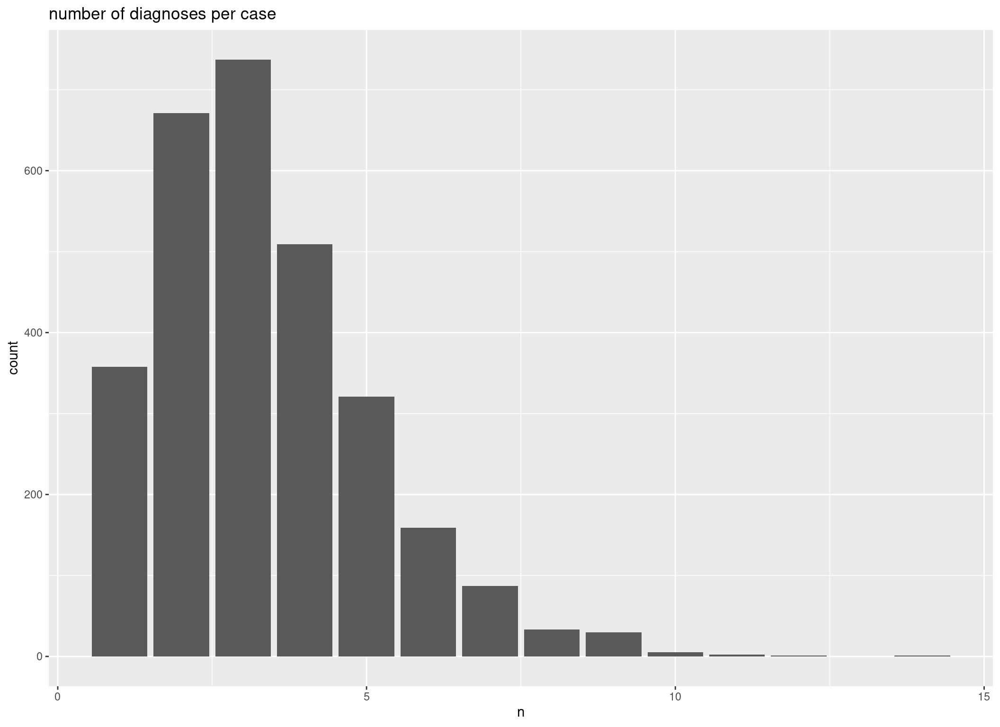

Last updated: 2023-08-02
Checks: 7 0
Knit directory: CoverCHILD/
This reproducible R Markdown analysis was created with workflowr (version 1.7.0). The Checks tab describes the reproducibility checks that were applied when the results were created. The Past versions tab lists the development history.
Great! Since the R Markdown file has been committed to the Git repository, you know the exact version of the code that produced these results.
Great job! The global environment was empty. Objects defined in the global environment can affect the analysis in your R Markdown file in unknown ways. For reproduciblity it’s best to always run the code in an empty environment.
The command set.seed(20221104) was run prior to running
the code in the R Markdown file. Setting a seed ensures that any results
that rely on randomness, e.g. subsampling or permutations, are
reproducible.
Great job! Recording the operating system, R version, and package versions is critical for reproducibility.
Nice! There were no cached chunks for this analysis, so you can be confident that you successfully produced the results during this run.
Great job! Using relative paths to the files within your workflowr project makes it easier to run your code on other machines.
Great! You are using Git for version control. Tracking code development and connecting the code version to the results is critical for reproducibility.
The results in this page were generated with repository version 7995c6f. See the Past versions tab to see a history of the changes made to the R Markdown and HTML files.
Note that you need to be careful to ensure that all relevant files for
the analysis have been committed to Git prior to generating the results
(you can use wflow_publish or
wflow_git_commit). workflowr only checks the R Markdown
file, but you know if there are other scripts or data files that it
depends on. Below is the status of the Git repository when the results
were generated:
Ignored files:
Ignored: .RData
Ignored: .Rhistory
Ignored: .Rproj.user/
Ignored: .gitignore~
Ignored: analysis/.Rhistory
Ignored: analysis/03_eating_disorder_stats.Rmd.bak
Ignored: analysis/_site.yml~
Ignored: analysis/style.css~
Ignored: archive/
Ignored: code/data_etl.R.bak
Ignored: code/eating_dis_cases.R.bak
Ignored: code/functions.R~
Ignored: data/Ergebnis_V2_PLZ_PID_Fall_pseudonym.csv
Ignored: data/ICD_V2.csv
Ignored: data/ICPM_V3.csv
Ignored: data/KIJUPSY_Med_Detail_V2_pseudonym.csv
Ignored: data/Labordaten_V3.csv
Ignored: data/P21_FAB_V1_pseudonym.csv
Ignored: data/P21_Fall_V1_pseudonym.csv
Ignored: data/P21_ICD_V1_pseudonym.csv
Ignored: data/P21_OPS_V1_pseudonym.csv
Ignored: data/Pers_Fall_V2_pseudonym.csv
Ignored: data/Rezepte_Pack_Wirkstoff_V4_pseudonym.csv
Ignored: data/UKF_patient_examples/
Ignored: data/ext/Auswertung C+ 01.01.2021-31.12.2022.xlsx
Ignored: data/ext/CoverChildDatenVerordnungen_Hessen_221110.xlsx
Ignored: data/ext/Diagnose Cluster NUM.docx
Ignored: data/ext/Diagnose_Cluster_NUM_sp.docx
Ignored: data/ext/Fachdisziplinen.pdf
Ignored: data/ext/ICPM_codesCoverChild_AGC.xlsx
Ignored: data/ext/KJP Behandlungstage 2022_20230109.xlsx
Ignored: data/ext/ZPID_lockdown_Arora_Schule.xlsx
Ignored: data/ext/ZPID_lockdown_Arora_Schule_sp.ods
Ignored: data/ext/ZPID_lockdown_measures_release_note-2.0.pdf
Ignored: data/ext/nonF AN Diagnosen und MEds.xlsx
Ignored: data/ext/nonF AN Diagnosen und MEds_sp.ods
Ignored: notes_2022-11-30.odt
Ignored: notes_221128
Ignored: notes_221128~
Ignored: notes_230320.txt
Ignored: notes_230320.txt~
Ignored: notes_etl.txt
Ignored: output/AN_Medikation_letzte_Woche.txt
Ignored: output/AN_somatische_Komorbiditäten.txt
Ignored: output/CoverCHILD_ED_stats_230217.zip
Ignored: output/CoverCHILD_ED_stats_230310.zip
Ignored: output/CoverCHILD_codebook_2023-07-13.csv
Ignored: output/CoverCHILD_codebook_2023-07-13.ods
Ignored: output/CoverCHILD_codebook_2023-07-25.csv
Ignored: output/CoverCHILD_codebook_sum_2023-07-13.csv
Ignored: output/CoverCHILD_codebook_sum_2023-07-25.csv
Ignored: output/CoverCHILD_codebooks_2023-06-15.ods
Ignored: output/CoverCHILD_codebooks_2023-06-15.xlsx
Ignored: output/CoverCHILD_dashboard_data_2023-06-26.rds
Ignored: output/CoverCHILD_dashboard_data_2023-07-25.rds
Ignored: output/CoverCHILD_data+EDvars_2023-03-28.rds
Ignored: output/CoverCHILD_data+EDvars_2023-04-24.rds
Ignored: output/CoverCHILD_data+EDvars_2023-05-16.rds
Ignored: output/CoverCHILD_data+EDvars_2023-06-12.rds
Ignored: output/CoverCHILD_data+EDvars_2023-06-19.rds
Ignored: output/CoverCHILD_data+EDvars_2023-06-21.rds
Ignored: output/CoverCHILD_data+EDvars_2023-06-22.rds
Ignored: output/CoverCHILD_data+EDvars_2023-06-26.rds
Ignored: output/CoverCHILD_data+EDvars_2023-07-12.rds
Ignored: output/CoverCHILD_data+EDvars_2023-07-25.rds
Ignored: output/CoverCHILD_data_230213.rds
Ignored: output/CoverCHILD_data_230215.rds
Ignored: output/CoverCHILD_data_230328.rds
Ignored: output/CoverCHILD_data_ETL_2023-03-28.RData.xz
Ignored: output/CoverCHILD_data_ETL_2023-05-16.RData.xz
Ignored: output/CoverCHILD_data_ETL_2023-06-01.RData.xz
Ignored: output/CoverCHILD_data_ETL_2023-06-12.RData.xz
Ignored: output/CoverCHILD_data_ETL_2023-06-19.RData.xz
Ignored: output/CoverCHILD_data_ETL_2023-06-21.RData.xz
Ignored: output/CoverCHILD_data_ETL_2023-06-22.RData.xz
Ignored: output/CoverCHILD_data_ETL_2023-06-26.RData.xz
Ignored: output/CoverCHILD_data_ETL_2023-07-25.RData
Ignored: output/CoverCHILD_data_ETL_2023-07-25.RData.xz
Ignored: output/CoverCHILD_data_exp_2023-07-25.rds
Ignored: output/CoverCHILD_data_exp_sum_2023-07-25.rds
Ignored: output/data_exp/
Ignored: output/data_utf8/
Ignored: output/ed_plots/
Ignored: output/fhir_etl/
Ignored: output/nicht-f-diagnosen.csv
Untracked files:
Untracked: .idea/
Untracked: code/fhir_etl.R
Untracked: code/fhir_etl.py
Untracked: code/join_close_cases.R
Untracked: code/summarise_per_case.R
Untracked: code/transform_target_dfs.R
Untracked: data/ext/icd_categories.txt
Untracked: t1_wflow.R
Untracked: t2_clar_case_merges.R
Untracked: t3_export_dashboard.R
Untracked: t4_treatment_sum.R
Untracked: variable_names.txt
Untracked: variable_names_clarify.txt
Untracked: variables_unify_per_case.txt
Note that any generated files, e.g. HTML, png, CSS, etc., are not included in this status report because it is ok for generated content to have uncommitted changes.
These are the previous versions of the repository in which changes were
made to the R Markdown
(analysis/02_eating_disorder_descr.Rmd) and HTML
(docs/02_eating_disorder_descr.html) files. If you’ve
configured a remote Git repository (see ?wflow_git_remote),
click on the hyperlinks in the table below to view the files as they
were in that past version.
| File | Version | Author | Date | Message |
|---|---|---|---|---|
| Rmd | e280f4c | Simeon Platte | 2023-07-28 | Add ED descriptive table of cases per month during Covid pandemic phases. |
| Rmd | df4002e | Simeon Platte | 2023-07-27 | Format ED markdowns, update links. |
| Rmd | a983cfd | Simeon Platte | 2023-07-26 | Reorder ED markdown files. |
Joining with `by = join_by(lockd_period_i_is_lockd)`
`summarise()` has grouped output by 'icd_f50'. You can override using the
`.groups` argument.$pre_covid
psych_med/icd_f50 F50- F50+ Total
FALSE 24.45% (89) 29.63% (16) 25.12% (105)
TRUE 75.55% (275) 70.37% (38) 74.88% (313)
Total 100.00% (364) 100.00% (54) 100.00% (418)
$dur_covid
psych_med/icd_f50 F50- F50+ Total
FALSE 23.06% (95) 25.68% (19) 23.46% (114)
TRUE 76.94% (317) 74.32% (55) 76.54% (372)
Total 100.00% (412) 100.00% (74) 100.00% (486)$pre_covid
icd_f50/sex M W Total
F50- 96.96% (766) 84.14% (923) 89.51% (1,689)
F50+ 3.04% (24) 15.86% (174) 10.49% (198)
Total 100.00% (790) 100.00% (1,097) 100.00% (1,887)
$dur_covid
icd_f50/sex M W Total
F50- 94.36% (301) 77.76% (500) 83.26% (801)
F50+ 5.64% (18) 22.24% (143) 16.74% (161)
Total 100.00% (319) 100.00% (643) 100.00% (962)$pre_covid
f50_type/sex M W Total
F50- 96.96% (766) 84.14% (923) 89.51% (1,689)
Essstörung Sonst. 1.27% (10) 3.83% (42) 2.76% (52)
Bulimie 0.63% (5) 4.10% (45) 2.65% (50)
Anorexie 1.14% (9) 7.93% (87) 5.09% (96)
Total 100.00% (790) 100.00% (1,097) 100.00% (1,887)
$dur_covid
f50_type/sex M W Total
F50- 94.36% (301) 77.76% (500) 83.26% (801)
Essstörung Sonst. 2.82% (9) 4.04% (26) 3.64% (35)
Bulimie 0.00% (0) 4.67% (30) 3.12% (30)
Anorexie 2.82% (9) 13.53% (87) 9.98% (96)
Total 100.00% (319) 100.00% (643) 100.00% (962)$pre_covid
icd_dd/icd_f50 F50- F50+ Total
FALSE 42.69% (721) 27.27% (54) 41.07% (775)
TRUE 57.31% (968) 72.73% (144) 58.93% (1,112)
Total 100.00% (1,689) 100.00% (198) 100.00% (1,887)
$dur_covid
icd_dd/icd_f50 F50- F50+ Total
FALSE 31.46% (252) 27.95% (45) 30.87% (297)
TRUE 68.54% (549) 72.05% (116) 69.13% (665)
Total 100.00% (801) 100.00% (161) 100.00% (962)$pre_covid
icd_ad/icd_f50 F50- F50+ Total
FALSE 54.71% (924) 48.99% (97) 54.11% (1,021)
TRUE 45.29% (765) 51.01% (101) 45.89% (866)
Total 100.00% (1,689) 100.00% (198) 100.00% (1,887)
$dur_covid
icd_ad/icd_f50 F50- F50+ Total
FALSE 53.06% (425) 47.20% (76) 52.08% (501)
TRUE 46.94% (376) 52.80% (85) 47.92% (461)
Total 100.00% (801) 100.00% (161) 100.00% (962)`summarise()` has grouped output by 'covid_pan'. You can override using the
`.groups` argument.$pre_covid
re_adm_soon_nona/icd_f50 F50- F50+ Total
FALSE 61.16% (1,033) 57.07% (113) 60.73% (1,146)
TRUE 38.84% (656) 42.93% (85) 39.27% (741)
Total 100.00% (1,689) 100.00% (198) 100.00% (1,887)
$dur_covid
re_adm_soon_nona/icd_f50 F50- F50+ Total
FALSE 55.93% (448) 56.52% (91) 56.03% (539)
TRUE 44.07% (353) 43.48% (70) 43.97% (423)
Total 100.00% (801) 100.00% (161) 100.00% (962) [1] "A49.3" "B35.3" "B85.0" "D50.8" "D50.9" "D68.22" "E30.0" "E34.3"
[9] "E73.9" "E74.1" "E74.3" "E83.38" "G40.6" "G43.1" "H10.1" "H61.0"
[17] "I31.3" "I34.0" "I34.1" "J03.9" "J06.9" "J18.8" "J30.1" "J35.2"
[25] "J45.0" "J45.1" "J45.9" "K44.9" "K59.09" "K90.0" "L08.9" "L20.8"
[33] "L70.0" "L89.00" "L89.04" "L89.10" "L89.19" "N10" "N14.2" "N18.2"
[41] "N91.1" "N94.6" "R09.1" "R79.8" "S00.05" "S50.88" "S51.7" "S51.9"
[49] "S52.50" "S70.88" "S93.40" "T14.1" "T43.2" "T43.6" "T45.4" "T69.1" Joining with `by = join_by(case_id)` [1] "Atosil® Filmtabletten (Promethazin)"
[2] "Bifiteral Lösung (ml)"
[3] "Biotin"
[4] "Calcium Sandoz D Osteo 500mg/400 IE"
[5] "Calcium Sandoz D Osteo KauTbl 500mg/400"
[6] "Calcium Sandoz D Tbl"
[7] "Calcium Sandoz/Vit. D 500mg/400I.E."
[8] "Calcium/Vit.D 500mg/400IE 50 KTA Sandoz"
[9] "Chlorprothixen"
[10] "Circadin (Melatonin) Tbl."
[11] "Circadin ret."
[12] "Clotrimazol 100mg vaginatab."
[13] "Clotrimazol 200mg vaginaltabletten (Kadefungin)"
[14] "Clotrimazol Creme 10mg/g"
[15] "Clotrimazol Creme 20mg"
[16] "Dienovel Orales Kontrazeptivum"
[17] "Dimenhydrinat"
[18] "Dorithricin classic Ltbl."
[19] "Dorithricin Classic Lutschtbl."
[20] "Dorithricin Halstbl"
[21] "Dorithricin Lutschtabletten"
[22] "Dorthricin"
[23] "Equasym Tbl."
[24] "Escitalopram"
[25] "Escitalopram Tbl"
[26] "Escitalopram Tbl."
[27] "ferro sanol duodenal"
[28] "Ferrosanol Duodenal Kapseln"
[29] "Floradix Dragees"
[30] "Fluomizin® 10 mg Vaginaltabletten"
[31] "Fluoxetin"
[32] "Fluoxetin Tbl."
[33] "Fluoxetin Tbl."
[34] "Heparinsalbe"
[35] "Ibuprofen"
[36] "Ibuprofen 400mg Ftb"
[37] "Ibuprofen Ftbl 400 mg"
[38] "Ibuprofen Tbl."
[39] "Isocillin 1,2 Mega"
[40] "Isotretinoin Kps 20mg (Roaccutan)"
[41] "L-Tyrosin"
[42] "Lisinopril Tbl."
[43] "Lorazepam"
[44] "Lorazepam Tbl Tavor"
[45] "Macrogol Beutel (Movicol)"
[46] "Macrogol Btl 13,125g Movicol"
[47] "Maxim Orales Kontrazeptivum"
[48] "Medikinet ret"
[49] "Medikinet retard"
[50] "Melatonin retard (Circadin) Tbl."
[51] "Melperon"
[52] "Melperon Tbl."
[53] "Midazolam (Buccolam)"
[54] "Mirtazapin Tbl"
[55] "Mirtazapin Tbl."
[56] "Movicol"
[57] "Movicol Beutel"
[58] "Movicol Btl."
[59] "Movicol Junior"
[60] "Movicol Junior Beutel"
[61] "Movicol Junior Btl."
[62] "Movicol junior Pulverbeutel"
[63] "NaCl 0,9% 500 ml Inf-Plastikflasche"
[64] "Nicotinell® 14 mg/24-Stunden-Pflaster"
[65] "Omega 3 1000mg"
[66] "Omega-3-Fettsäuren (Kps)"
[67] "Omega-3-Kapseln"
[68] "Otriven Nasentropfen"
[69] "Otriven Nasentropfen (Xylometazolin) 0,05% 10 ml"
[70] "Pantoprazol"
[71] "Pantoprazol Tbl"
[72] "Paracetamol"
[73] "Paracetamol 500 mg"
[74] "Paracetamol Tbl."
[75] "Pipamperon"
[76] "Pipamperon (Dipiperon)"
[77] "Pipamperon Saft"
[78] "Pipamperon Tbl"
[79] "Pipamperon Tbl (Dipiperon)"
[80] "Pipamperon Tbl."
[81] "Quetiapin ret."
[82] "Quetiapin Tbl."
[83] "Quetiapin unret."
[84] "Quetiapin unretardiert Tbl."
[85] "Reducto Spezial 602mg/360mg"
[86] "Reducto spezial Tbl 612,2mg Phosphat"
[87] "Ringer Lösung"
[88] "Ringer Lsg 500 ml Inf-Plastikflasche"
[89] "Ringer-Lsg."
[90] "Ringerlösung"
[91] "Risperidon Tbl."
[92] "rubiase Calcium Trinkampulle ( 350mg/500mg pro 10ml ) - je vor der Mahlzeit"
[93] "Salbutamol Dosieraerosol"
[94] "Sertralin"
[95] "Sertralin Filmtabletten"
[96] "Sertralin Tbl"
[97] "Sertralin Tbl."
[98] "Slenyto- Melatonin"
[99] "Transpulmin Inhalation"
[100] "Venlafaxin Retard Kapseln"
[101] "Vit D (Vigantolvit)"
[102] "Vitamin B1"
[103] "Vitamin B1 (Thiamin) Tbl."
[104] "Voltaren Salbe"
[105] "Vomex Tbl."
[106] "Xylometazolin 0,05% NT (Otriven)"
[107] "Xylometazolin NTR 0.05% 10ml Kinder"
R version 4.3.1 (2023-06-16)
Platform: x86_64-pc-linux-gnu (64-bit)
Running under: Ubuntu 22.04.2 LTS
Matrix products: default
BLAS: /usr/lib/x86_64-linux-gnu/blas/libblas.so.3.10.0
LAPACK: /usr/lib/x86_64-linux-gnu/lapack/liblapack.so.3.10.0
locale:
[1] LC_CTYPE=en_US.UTF-8 LC_NUMERIC=C
[3] LC_TIME=de_DE.UTF-8 LC_COLLATE=en_US.UTF-8
[5] LC_MONETARY=de_DE.UTF-8 LC_MESSAGES=en_US.UTF-8
[7] LC_PAPER=de_DE.UTF-8 LC_NAME=C
[9] LC_ADDRESS=C LC_TELEPHONE=C
[11] LC_MEASUREMENT=de_DE.UTF-8 LC_IDENTIFICATION=C
time zone: Europe/Berlin
tzcode source: system (glibc)
attached base packages:
[1] tools stats graphics grDevices utils datasets methods
[8] base
other attached packages:
[1] knitr_1.43 janitor_2.2.0 glue_1.6.2
[4] rlang_1.1.1 DescTools_0.99.49 psych_2.3.6
[7] ggVennDiagram_1.2.2 magrittr_2.0.3 lubridate_1.9.2
[10] forcats_1.0.0 stringr_1.5.0 dplyr_1.1.2
[13] purrr_1.0.1 readr_2.1.4 tidyr_1.3.0
[16] tibble_3.2.1 ggplot2_3.4.2 tidyverse_2.0.0
[19] workflowr_1.7.0
loaded via a namespace (and not attached):
[1] gld_2.6.6 gtable_0.3.3 xfun_0.39 bslib_0.5.0
[5] processx_3.8.2 lattice_0.21-8 callr_3.7.3 tzdb_0.4.0
[9] vctrs_0.6.3 ps_1.7.5 generics_0.1.3 parallel_4.3.1
[13] proxy_0.4-27 fansi_1.0.4 highr_0.9 pkgconfig_2.0.3
[17] Matrix_1.6-0 data.table_1.14.8 readxl_1.4.3 rootSolve_1.8.2.3
[21] lifecycle_1.0.3 farver_2.1.1 compiler_4.3.1 git2r_0.32.0
[25] Exact_3.2 munsell_0.5.0 mnormt_2.1.1 getPass_0.2-2
[29] snakecase_0.11.0 httpuv_1.6.11 class_7.3-22 htmltools_0.5.5
[33] sass_0.4.7 yaml_2.3.7 later_1.3.1 pillar_1.9.0
[37] jquerylib_0.1.4 whisker_0.4 MASS_7.3-60 cachem_1.0.8
[41] boot_1.3-28 nlme_3.1-162 tidyselect_1.2.0 digest_0.6.33
[45] mvtnorm_1.2-2 stringi_1.7.12 labeling_0.4.2 rprojroot_2.0.3
[49] fastmap_1.1.1 grid_4.3.1 expm_0.999-7 lmom_2.9
[53] colorspace_2.1-0 cli_3.6.1 utf8_1.2.3 e1071_1.7-13
[57] withr_2.5.0 RVenn_1.1.0 scales_1.2.1 promises_1.2.0.1
[61] timechange_0.2.0 rmarkdown_2.23 httr_1.4.6 cellranger_1.1.0
[65] hms_1.1.3 evaluate_0.21 Rcpp_1.0.11 rstudioapi_0.15.0
[69] jsonlite_1.8.7 R6_2.5.1 fs_1.6.3